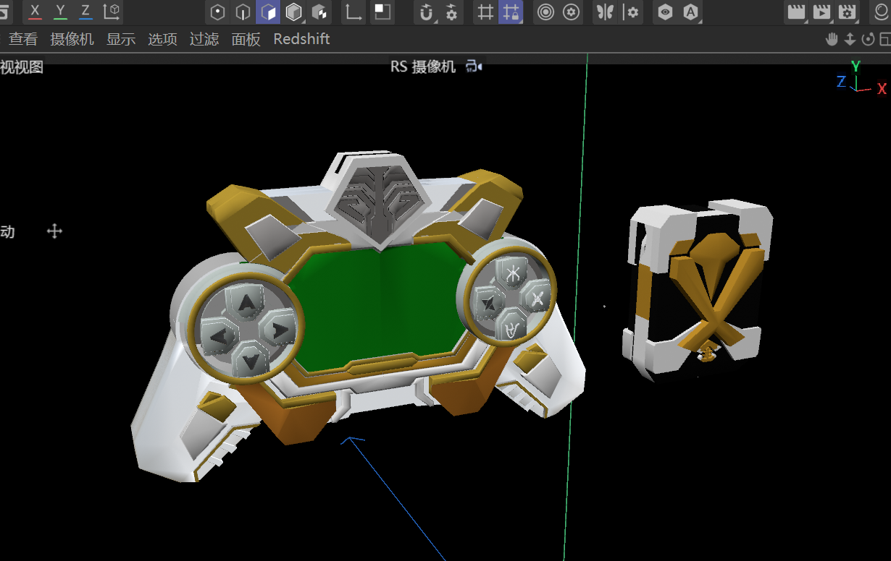
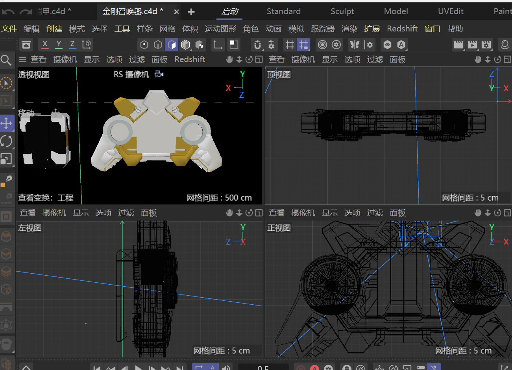

03 / Hard-surface
金刚召唤器
系列第三件，走"重装"路线。中央是一块绿色能量屏，两侧各一枚带五向按键的圆盘——整件像一台握在手里的仪表。
- 类型
- 硬表面道具设计
- 性质
- 个人兴趣 / 同人非商业
- 年份
- 2026
- 工具
- C4D · Redshift
- 输出
- 静帧渲染

Design Notes / 设计说明
第三件的定位很明确：力量型。前两件一个张扬、一个收敛，金刚需要的是"沉"——所以体块更厚，信息密度更高，按键和结构件明显变多。
中央是一块六边形的绿色能量屏，是整个装置的视觉重心；两侧各一枚圆形控制盘，盘上排布五向按键，一圈刻着方向性的符号。左盘负责方向、右盘负责开合，功能上说得通，造型上也让整体保持左右对称。
配色用橙金与白，金色只出现在边缘和顶部纹章上，用来收住轮廓。顶部那枚兽首纹章是整件唯一"不像机械"的部分——它给这件重装道具留了一点图腾感，也是和三件系列呼应的地方。
重装不等于堆零件。信息越密，越要有一条能一眼读完的主轴。
建模在 C4D 中完成，渲染用 Redshift，四视图线框见下方过程图——可以看到大量细节是靠在平面上做局部切割和倒角堆出来的，而不是整体曲面拓扑。
原型来自特摄作品《铠甲勇士》，属个人兴趣创作，非商业用途。
Process / 制作过程
先出四视图确认比例与零件分件，再进视口用 RS 摄像机定构图，最后逐区块细化。上方的正视图其实是两张：左盘与右盘必须严格镜像，否则整体会"歪"。

